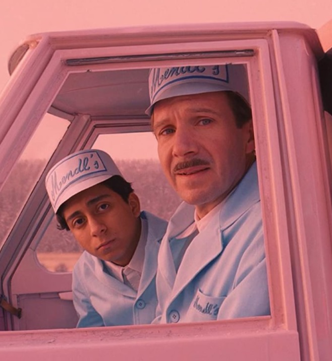

1.Simetría: Las escenas están cuidadosamente compuestas y presentan una gran simetría y equilibrio visual, lo que le da una sensación de orden y armonía.
2.Colores vibrantes: La paleta de colores es muy viva y saturada, en su mayoria en tonalidades pasteles, lo que le da a la película una sensación de alegría y optimismo, contrastando de una forma muy interesante con los momentos oscuros y explicitos.
3.Diseño de producción detallado: La producción está llena de detalles minuciosos y elaborados, desde los trajes y los decorados hasta los objetos de la escena, lo que le da a la película un aspecto lujoso y elaborado.